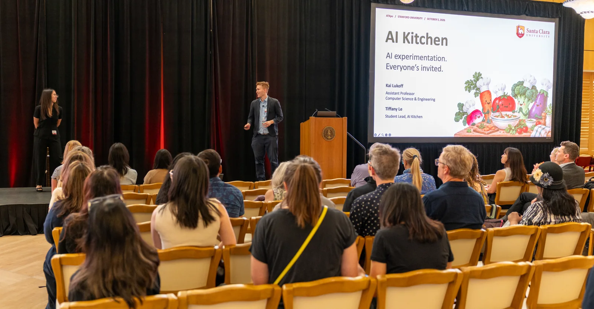
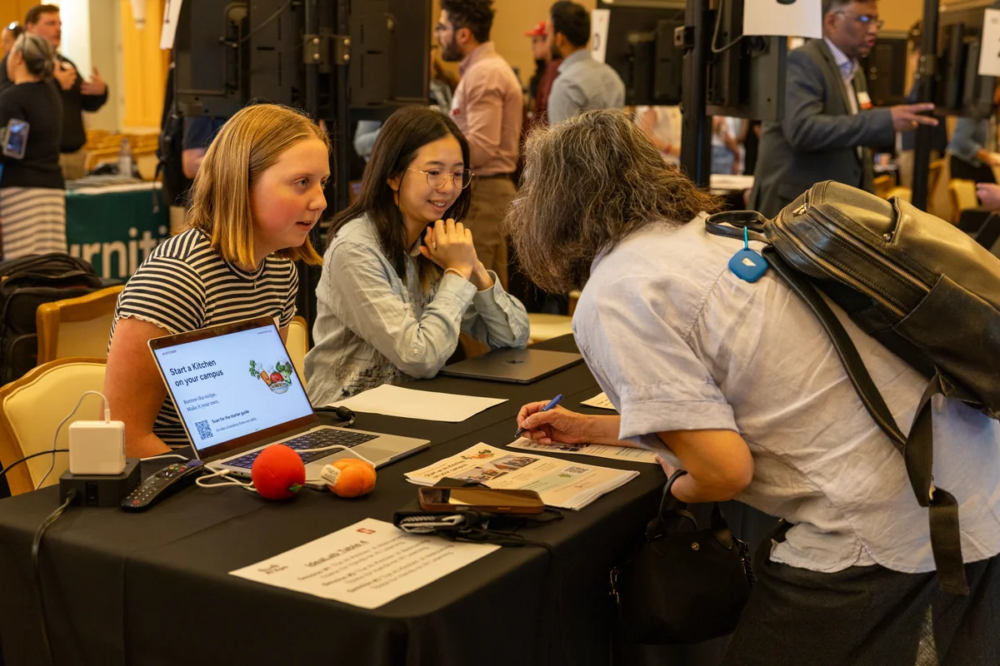
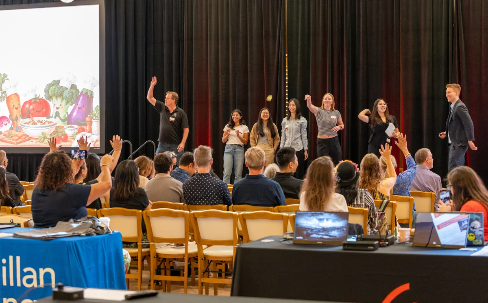

AI Kitchen gives a plenary talk at Stanford's ATXpo
Student leader Tiffany Le and faculty lead Kai Lukoff gave a plenary talk at ATXpo 2026 at Stanford University on October 5. They shared how AI Kitchen welcomes students from every major to try AI tools, learn from guest chefs, and build things.
Our team also hosted an IdeaLab exhibit table, sharing student projects and talking with visitors about starting a Kitchen on their own campuses. Thanks to everyone who joined us!


